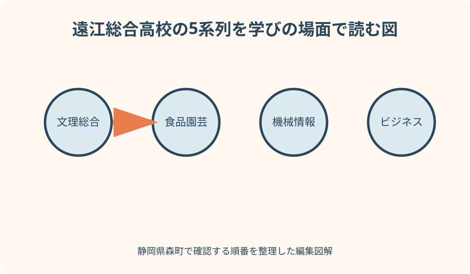
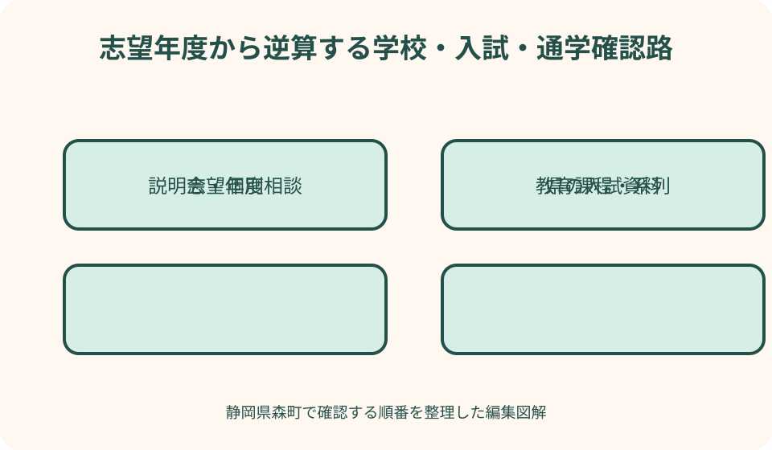

教育・高校｜最終確認 2026-08-10
静岡県森町の県立遠江総合高等学校を調べる｜総合学科・学校生活・アクセス・入試の確認入口
遠江総合高校を調べるとき、系列名の一覧や過去の入試資料だけでは学校生活を判断できません。総合学科で何をいつ選ぶのか、希望する授業を履修できる条件は何か、説明会で何を見るか、遠州森駅から朝夕に通えるかを一つずつ確認する必要があります。入試要領や学校裁量枠は年度で変わるため、古いPDFを現在の条件として使えません。本記事は学校の優劣や合格可能性を評価せず、学校・静岡県教育委員会・森町・交通事業者の公式情報へ進む順番を示します。

編集イラスト最初に学校名・設置者・年度をそろえる
検索の最初に正式名を静岡県立遠江総合高等学校とし、学校公式ドメインと静岡県教育委員会へ進みます。似た名称の総合高校や非公式受験情報を混ぜません。
確認資料には必ず対象年度を書きます。中学三年生が受ける年度、入学後の教育課程年度、説明会開催年度は同じとは限らず、PDFの表紙と更新日を見ます。
学校の所在地は静岡県周智郡森町森です。森町という語だけでは北海道など別地域も出るため、住所、電話、市外局番まで照合します。
一枚の比較メモを作り、左側へ学校公式、中央へ県教育委員会、右側へ森町・交通事業者の確認事項を置きます。学校紹介と入試ルールを一つのページだけで判断しないためです。
総合学科は系列名だけで理解しない
学校公式の系列紹介には、文理総合、食品園芸、機械情報、ビジネス、ライフデザインの五系列が掲載されています。これは学校を調べる重要な入口です。
ただし系列を、出願時に完全に分かれる五つの独立学科と読み替えません。総合学科の教育課程、系列選択の時期、科目の組み方は学校の最新資料で確認します。
系列名から授業内容を想像するだけでは不十分です。必履修科目、選択科目、実習、資格、施設、定員や時間割上の条件を、志望年度の教育課程表と説明会で尋ねます。
中学生の時点で進路が一つに決まっていなくても、選択肢の広さだけを利点と断定しません。選ぶための面談、学習記録、科目選択の期限が自分に合うかを確かめます。
5系列は学びたい場面へ翻訳する
文理総合系列を調べるなら、大学等への進学という結果名だけでなく、履修できる教科、講座の組合せ、進路指導の時期を見ます。進学先一覧だけで自分の授業を決めません。
食品園芸系列では、食品や園芸という名称から、実習場所、衛生・安全上の服装、材料費、校外活動、学ぶ科目を具体的に確認します。農業体験の印象だけで判断しません。
機械情報系列とビジネス系列は、設備、ソフト、実習、検定の対象や受検条件を分けて尋ねます。資格名が掲載されても全員取得や就職を保証するものではありません。
ライフデザイン系列も、名称だけで家庭科分野に限定して想像せず、現行科目、実習、進路とのつながりを確認します。系列横断の履修可否も学校へ質問します。

教育課程表は入学年度のものを読む
学校公式の教育課程ページは年度を明記して掲載されています。志望者は自分の入学年度に適用される表かを確認し、前年表は構造を知る参考に留めます。
表では学年ごとの必履修、選択、単位数、系列に関係する科目を色や注記まで読みます。画像が小さい場合は原本を開き、文字が読めないまま結論を出しません。
希望科目が時間割上で同時選択できるか、受講人数や設備による条件があるかは、表だけでは分からない場合があります。説明会や個別相談で具体的に確認します。
教育課程が魅力的に見えても、自分の基礎学習、通学時間、部活動との両立を考えます。科目数の多さを学校の優劣へ直結させません。
学校生活は今年度の記事と年間予定で確かめる
学校生活を知るには、学校公式の『今年度の遠高生』、年間行事予定、部活動、学校経営計画を別々に見ます。一つの催しの写真だけで毎日の雰囲気を決めません。
行事予定は変更される可能性があり、在校生向けの詳細には公開範囲があります。候補日を家族予定へ入れる前に学校からの最新通知を確認します。
部活動は名称、活動日、終了時刻、休日活動、必要費用、移動方法を質問します。公式に部名があることは、志望年度も同じ条件で募集する保証ではありません。
学校生活の相性は、校則、昼食、端末、服装、相談体制も含みます。SNS上の断片的な感想を事実一覧へ混ぜず、説明会と学校公式で確認します。
学校説明会は見学項目を持って参加する
説明会、オープンスクール、一日体験入学は年度ごとに名称、対象、申込、内容が変わります。過去ページの日付を次年度の日程として転載しません。
学校公式では過去に予定された催しの中止と別日の説明会案内も掲載されています。天候や学校事情による変更を想定し、出発直前まで公式のお知らせを確認します。
参加時は、系列説明、実習施設、普通教室から特別教室への移動、図書室、昼食場所、駅から校門までを見ます。きれいかどうかの感想だけで終えません。
質問は『どの系列が有利ですか』ではなく、『いつ何を材料に系列や科目を選びますか』『希望が重なった場合の扱いはどこで説明されますか』と具体化します。

個別相談で確認する八つのこと
個別相談では、総合学科の選択時期、教育課程、履修条件、実習費、資格、進路支援、配慮相談、通学を質問一覧にします。全部を口頭記憶へ任せません。
特別な配慮や健康上の相談が必要なら、中学校の先生と早めに確認し、県と学校の正式な手順へ進みます。説明会当日に初めて伝えて即答を求めません。
入試に関する質問は、自分が受ける年度、選抜区分、資料名を示します。前年の内申、面接、検査の扱いを現年度へそのまま移しません。
回答は担当者名を公開するためではなく、家族と中学校で共有するために日付と要点を記録します。後で公式資料と違うように見えたら、学校へ再確認します。
入試情報は県と学校の同じ年度を組み合わせる
静岡県公立高校の入試は、県教育委員会の対象年度ページから実施要領、日程、出願、学校裁量枠などを確認します。学校の案内だけで全県共通ルールを把握しません。
学校公式の入試関係ページには学校独自の資料が掲載される場合があります。ページに残る前年資料を見つけても、受検年度の公開前なら条件が同じと仮定しません。
資料名の『令和何年度入学者選抜』と、自分が中学三年生である年度を照合します。公表日、訂正、追加資料も県教育委員会のお知らせで追います。
募集人数、検査、面接、重視する観点などは、最新の正式資料を中学校の進路担当と読みます。本記事は点数予測、学校順位、合格保証を提供しません。
過去倍率や進路実績を合否予測へ使わない
過去の志願状況や入試結果は、その年度の記録です。志願者数、募集、選抜方法が変われば意味も変わるため、翌年度の合格可能性を計算する材料にはできません。
進路実績も在校生の進路結果であり、特定系列を選べば同じ進学・就職先へ進める保証ではありません。本人の履修、努力、求人や入試条件が関わります。
学校比較サイトの偏差値や口コミは、公式の教育課程や入試要領ではありません。参考に触れる場合も、出典時点と算出方法が不明なら判断の中心に置きません。
中学校の先生との面談では、最新の県資料、自分の希望、通学負担、学びたい科目を並べます。合格だけをゴールにせず、入学後三年間を具体化します。
遠州森駅から校門まで実際に歩く
学校公式アクセスは、天竜浜名湖鉄道の遠州森駅から徒歩十分と案内しています。徒歩時間は目安なので、信号、踏切、荷物、雨天を含めて本人が歩きます。
体験日は休日昼間だけでなく、可能なら平日の通学時間帯に保護者と安全を確認します。歩道、横断場所、見通し、暗くなる区間、雨宿りできる場所を見ます。
遠州森駅の列車時刻と運賃は天竜浜名湖鉄道公式で確認します。検索地図の到着時刻だけでなく、学校の始業に余裕を持てる列車かを照合します。
自転車併用や駅までの送迎を考える場合は、駐輪、学校ルール、車の乗降場所を確認します。道路上や近隣施設を無断の送迎待機場所にしません。
放課後の帰路から通学可能性を測る
通学判断は朝だけでなく帰りから行います。通常授業、部活動、委員会、行事準備で終了時刻が違う場合を想定し、利用可能な列車やバスを複数確認します。
一本乗り遅れた場合の待ち時間、駅で安全に待てる場所、冬の暗さ、家族へ連絡する方法を決めます。毎日送迎できるという曖昧な約束に依存しません。
天浜線から別の鉄道やバスへ乗り継ぐ人は、最終接続を一体で見ます。学校から遠州森駅までの歩行時間をゼロとして経路検索しません。
定期券、運賃、ダイヤは利用開始前に事業者へ確認します。三年間の交通費は概算を家計へ入れますが、現在の運賃を将来まで固定しません。
列車運休・大雨・家族が迎えられない日の代案
天候悪化時は、天竜浜名湖鉄道の運行情報、学校からの連絡、森町の防災情報を別々に確認します。列車が動くことと学校が通常授業であることは同じではありません。
朝の運休時は自己判断で危険な送迎をせず、学校が示す連絡方法に従います。欠席・遅刻連絡の方法を入学前から家族で確認します。
帰宅時に運休した場合の待機場所、保護者連絡、代替交通を学校へ尋ねます。タクシーが常に確保できる、友人宅へ行けるという前提を置きません。
大雨、河川増水、土砂災害の情報があるときは、最短経路を探して移動を続けません。学校、交通事業者、自治体の指示を優先し、迎えも安全が確認できるまで待ちます。
指定避難所と在校生の災害対応を混ぜない
森町公式の指定避難所一覧には県立遠江総合高校が掲載されています。しかし、指定されていることと、災害発生時に直ちに一般利用できることは同じではありません。
避難所は町が必要に応じて開設し、災害の種類や安全確認で運用が変わります。在校生や保護者は学校の安否確認、待機、引渡しの手順を優先します。
保護者が迎えに行く場合も、校内へ自由に車で入れるとは限りません。学校からの連絡前に道路へ集中せず、指定された入口、本人確認、引渡し方法を確認します。
通学路のハザードは自宅から駅、駅から学校を分けて見ます。森町外から通う場合は、居住自治体と乗換地域の防災情報も登録します。
森町で過ごす三年間の生活を考える
学校は森町の町なかにあり、遠州森駅や役場などとの位置関係を地図で確認できます。便利という言葉だけでなく、昼食、放課後、通院、買物のルールを学校生活に沿って見ます。
校外の店舗や公共施設は生徒が自由に利用できるとは限りません。学校の校則、下校時刻、立寄りルールを確認し、近い施設を放課後の居場所として勝手に想定しません。
地域行事や総合学科の学びが結びつく活動を見つけても、毎年同じ内容で全員参加とは限りません。今年度の学校記事と教育課程で事実を確かめます。
町外から通う家族は、森町の医療、防災、交通の公式ページをブックマークします。学校だけでなく生活圏の連絡先を知ることが、三年間の安心につながります。
良い点
学校公式が五系列、教育課程、進路情報、部活動、入試関係を分けて公開しており、総合学科を項目別に調べる入口が用意されています。
遠州森駅から徒歩という公式案内があり、鉄道通学を現地で試しやすい立地です。町公式の公共交通情報と組み合わせれば、車以外の通学も検討できます。
学校説明会や個別相談を通じ、系列名だけでは分からない履修や施設を本人が確認できます。質問を具体化して参加すれば、入学後の像を作れます。
これらは学校が他校より優れているという評価ではありません。本人の学びたい内容、通学、費用、支援条件と合うかを確かめられる材料がある、という利点です。
注文したい点
系列紹介が画像中心だと、科目、選択時期、履修条件を検索しにくい場合があります。年度別に本文でも要点と変更点が示されると、志望者が比較しやすくなります。
過年度の説明会や入試資料が検索結果に残るため、対象年度を誤認しやすい状態です。ページ冒頭へ『現在の中学三年生向け』など対象を明示してほしいところです。
通学案内は駅からの目安だけでなく、雨天経路、駐輪、送迎、災害時の待機や引渡しの確認入口がまとまると、町外家庭にも分かりやすくなります。
志望者側も、分かりやすい進路実績や系列名だけを見て結論を急がないことが必要です。不明点を一覧にして学校と中学校へ確認します。
代案・結論
結論は、学校公式の教育課程・系列・学校生活、県教育委員会の受検年度資料、森町と天浜線の交通・防災を三列で調べることです。
説明会に参加できなければ、過去動画や口コミだけで代用せず、学校公式の個別相談案内を確認します。質問表を送り、見学可能な範囲を学校へ尋ねます。
入試資料がまだ公開されていなければ、前年条件で準備を確定せず、中学校の進路担当と公開予定を追います。正式資料の公表後に差分を確認します。
今日できる行動は、五系列から気になる二つを選び、学びたい授業、見たい施設、帰宅時刻の三問を書くことです。その三問を説明会と現地通学で検証します。
大石の視点
私は、森町で高校進学を考える家族にとって、学校までの距離より、朝夕の時間と帰路の代案を現地で測ることが大切だと考えます。
住まい探しでは遠州森駅や学校を地図上の近さだけで示さず、歩道、踏切、暗さ、送迎車の動き、災害時の経路を本人と確認します。
実家から通学する可能性があるなら、実家カルテに最寄駅、始発候補、帰りの接続、家族の迎え条件、避難情報の確認先を書きます。売却を決めていない家にも有用です。
不動産業者が学校を格付けしたり、入試結果を保証したりすることはできません。道路と生活動線を確かめ、教育内容は学校、入試は県の公式資料へ戻すのが誠実です。
家族で更新する志望校確認シート
確認シートには、資料名、年度、URL、確認日、質問、回答を記録します。古い資料は削除せず『参考・対象外』と明記し、現在資料との混同を防ぎます。
系列欄には名称ではなく、希望科目、選択時期、費用、実習、進路支援を書きます。通学欄には朝の到着と放課後二通りの帰路を置きます。
入試欄は県の実施要領、学校裁量枠、学校独自資料、中学校からの案内を分けます。出典のない合格予測は書き込みません。
本人と保護者が別々に気づいた点を残し、最後は学校説明会と中学校面談で確認します。調べる目的は良い評判を集めることではなく、三年間を自分の条件で具体化することです。
公式情報・確認先
掲載内容は次の一次情報を基礎に整理しました。営業、料金、催し、交通は変わるため、出発前または手続き前にリンク先で最新情報を確認してください。
- 公共交通（静岡県森町、2026-08-10確認）
- 町指定避難所等について（静岡県森町、2026-08-10確認）
- 防災情報（静岡県森町、2026-08-10確認）
- 学校案内（静岡県立遠江総合高等学校、2026-08-10確認）
- 系列紹介（静岡県立遠江総合高等学校、2026-08-10確認）
- 教育課程（静岡県立遠江総合高等学校、2026-08-10確認）
- 中学生の皆様へ（静岡県立遠江総合高等学校、2026-08-10確認）
- 入試関係（静岡県立遠江総合高等学校、2026-08-10確認）
- アクセス（静岡県立遠江総合高等学校、2026-08-10確認）
- 教育委員会高校教育課トップページ（静岡県教育委員会、2026-08-10確認）
- 遠州森駅 路線と駅情報（天竜浜名湖鉄道、2026-08-10確認）